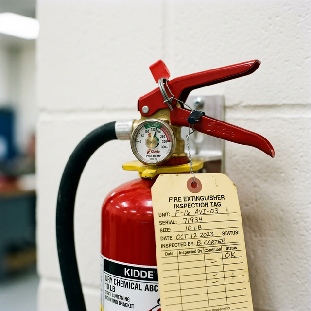

Fire safety basics
no extinguisher classes
Module Objectives
- Verify the serviceable status of a portable fire extinguisher.
- Explain the four criteria that dictate a fire extinguisher is ready for emergency use.
- Identify common fire prevention practices specific to avionics benches.
Why Does This Matter?

A small fire starts on an avionics bench when a powered-on soldering iron tip is accidentally laid across a solvent-soaked rag. You grab the nearest wall-mounted fire extinguisher. You pull the handle, but nothing happens. The gauge reads zero. The safety pin is missing. The inspection tag expired eight months ago. You are now fighting a rapidly growing chemical fire with an empty metal cylinder. This scenario is completely preventable if technicians verify extinguisher readiness before an emergency occurs.
What You Need To Know
In a Part 145 avionics shop, fire prevention is primarily about housekeeping, controlling ignition sources, and situational awareness. However, if prevention fails, you must be absolutely certain the fire extinguishing equipment is ready.
Fire Extinguisher Readiness Verification
A fire extinguisher is not "ready" just because it is hanging on the wall. To confirm a fire extinguisher is serviceable and ready for emergency use, you must visually verify four items:
- 1. Pressure gauge in the green zone — The gauge needle must be firmly in the green operating band. If it points to red (empty) or is overcharged, the extinguisher is unreliable and must be pulled from service.
- 2. Safety pin intact with tamper seal — The metal pin prevents accidental discharge. The plastic breakable tamper seal proves the pin hasn't been pulled. If the seal is broken, assume the extinguisher has been partially discharged and lost pressure.
- 3. No visible physical damage — Inspect the metal cylinder, rubber hose, and plastic nozzle for heavy dents, severe corrosion, cracks, or mud-wasp obstructions in the nozzle.
- 4. Annual inspection tag is current — A certified fire inspector must physically verify and punch the tag annually. If the punched date is older than one year, the extinguisher is legally out of compliance, even if the gauge is green.
All four checks must pass. If any single item fails, the extinguisher is not serviceable. Notify your facility manager immediately.
Fire Prevention Basics on the Bench
- Never leave soldering irons unattended while powered on. Always return them to their heat-resistant resting stands.
- Clean up solvent-soaked rags and dispose of them in approved, self-closing metal waste containers (they are a spontaneous combustion risk).
- Do not daisy-chain power strips (plugging one power strip into another) to run bench test equipment.
System Visualization
graph TD
A[Daily Extinguisher Check] --> B{1. Is gauge in GREEN?}
B -- Yes --> C{2. Is pin and seal intact?}
C -- Yes --> D{3. Is it free of damage?}
D -- Yes --> E{4. Is inspection tag current?}
E -- Yes --> F[Extinguisher is Serviceable]
B -- No --> G[Pull from Service / Report]
C -- No --> G
D -- No --> G
E -- No --> G
style F fill:#22c55e,stroke:#14532d,stroke-width:2px,color:#fff
style G fill:#ef4444,stroke:#7f1d1d,stroke-width:2px,color:#fff
On The Job
When you walk into your primary work area at the start of your shift, glance at the nearest fire extinguisher. Is the gauge green? Is the pin in? Does the tag have a current date? This visual sweep takes five seconds. If anything is wrong, report it immediately. Do not assume "the safety manager handles that." It is your bench and your safety.
Reference Terms
Fire Extinguisher Readiness Check
To verify a fire extinguisher is ready: (1) pressure gauge in green zone, (2) safety pin intact with tamper seal, (3) no visible damage to body or hose, (4) annual inspection tag current.
Serviceable Extinguisher
A fire extinguisher that passes all four readiness checks and is fully capable of deploying its rated chemical agent.
Tamper Seal
A breakable plastic tie securing the extinguisher pin, indicating that the unit has not been previously fired or compromised.
Annual Inspection Tag
The physical tag attached to the extinguisher documenting the month and year of the last certified professional inspection.
Assessment Check
A fire extinguisher is only ready if it has four things: gauge in green, pin intact, no physical damage, and a current inspection tag — verify it before you need it. --- ---